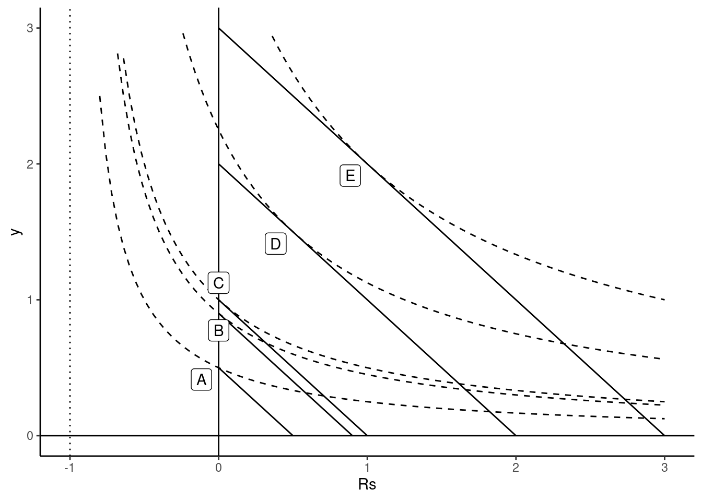
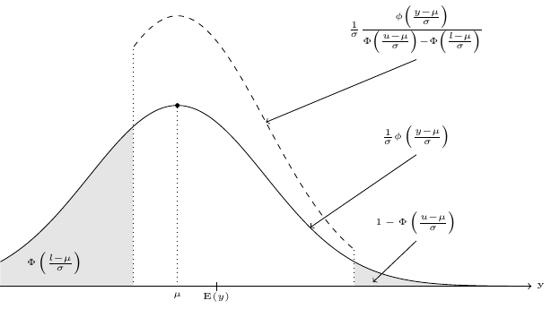
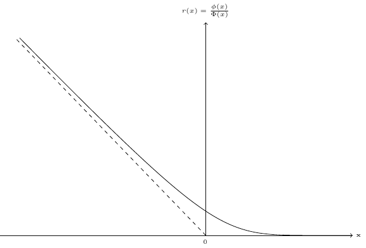
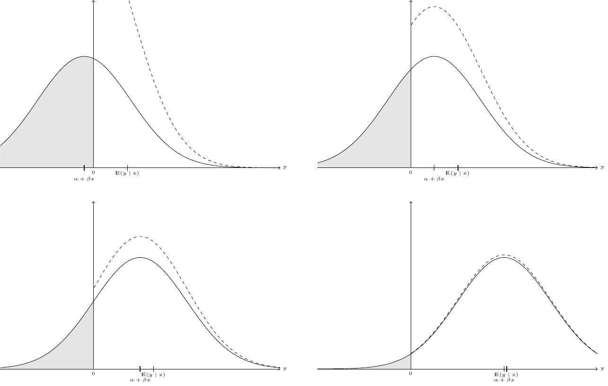
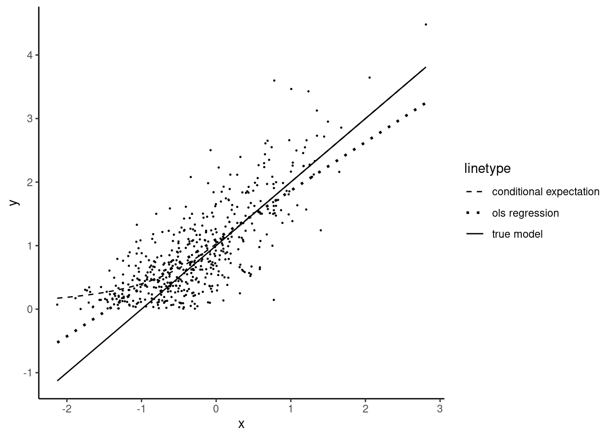
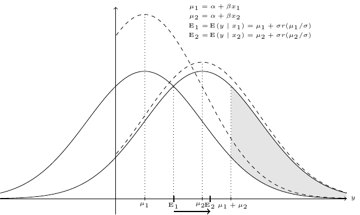
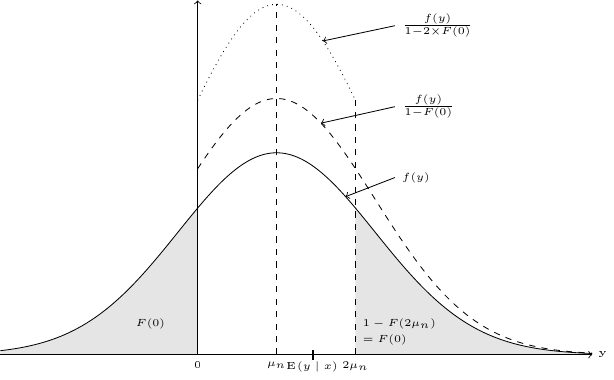
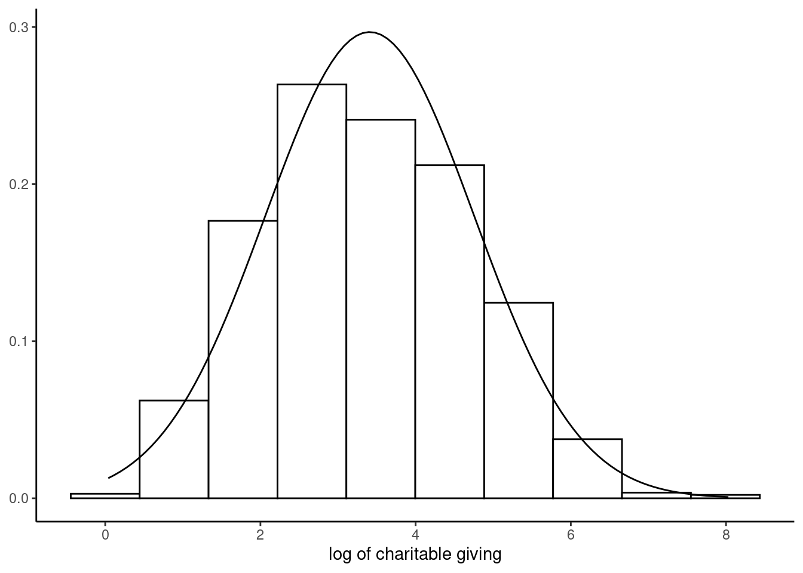

11 Censored and truncated models
We’ll discuss in this chapter models for which the value of the response is continuous and observed only in a certain range. These variables are truncated for a certain value, which can be on the left side of the distribution (\(l\)), on the right side (\(u\)) or on both sides. Therefore, the distribution of such a variable is a mix of a discrete and a continuous distribution:
- the value of \(y\) is continuous on the \(]l, u[\) interval, and its distribution can be described by a density function \(f(y)\),
- there is a mass of probability on \(l\) or/and on \(u\), which is described by a probability \(P(y = l)\) or/and \(P(y = u)\).
Section 11.1 describes the situations where such responses occur. The Tobit model is presented in details in Section 11.2, the relevant estimation methods in Section 11.3 and their implementation in R in Section 11.4. Section 11.5 presents different tools useful to evaluate fitted models. Finally, Section 11.6 presents the two-equations tobit model.
11.1 Truncated response, truncated and censored samples
Truncated responses are observed in different contexts in economics. The first is a corner solution, the second is a problem of missing data, also called censoring, and the last is a problem of selection, also called incidental truncation.
Corner solution
Consider a consumer who can buy two goods, food (\(z\)) and vacations (\(y\)). Denoting \(q_z\) and \(q_y\) as the quantities of the two goods, assume that the preferences of the consumer can be represented by the following utility function:
\[ U(q_y,q_z) = (q_y + \mu) ^ \beta q_z ^ {1 - \beta} \]
where \(0 < \beta < 1\) and \(\mu > 0\). The consumer seeks to maximize their utility subject to their budget constraint, which writes \(x=p_y q_y + p_z q_z\), where \(x\) is the income and \(p_y\) and \(p_z\) are the unit prices of the two goods. For an interior solution, the consumer should equate the marginal rate of substitution to the price ratio:
\[ \frac{\beta}{1-\beta}\frac{q_z}{q_y + \mu} = \frac{p_y}{p_z} \]
We therefore have \(p_z q_z = \frac{1 - \beta}{\beta} p_y(q_y + \mu)\). Replacing in the budget constraint and solving for \(q_z\) and then for \(q_y\), we finally get the demand functions.
\[ \left\{ \begin{array}{rcl} q_z &=& \displaystyle(1-\beta)\frac{x}{p_z} + (1-\beta)\frac{p_y}{p_z} \mu \\ q_y &=& \displaystyle\beta \frac{x}{p_y} - (1-\beta)\mu \\ \end{array} \right. \]
Note that the demand function for \(y\) can return negative values, which of course is impossible. Therefore, the pseudo-demand function previously written are only suitable for an interior solution, i.e., when both goods are consumed. This is only the case for a sufficient level of income, namely \(\bar{x} = \frac{1 - \beta}{\beta} p_y \mu\). For a lower level of income, we have \(q_y = 0\) and therefore \(q_z = x / p_z\).
This situation is depicted on Figure 11.1. Points \(D\) and \(E\) correspond to interior solutions for large values of the income. On the contrary, \(A\) and \(B\) are corner solutions for low income households. We then have \(q_y=0\) and the value of the marginal rate of substitution (the slope of the indifference curve) is lower than the price ratio. Point \(C\) corresponds to the level of income that leads to a corner solution but for which the marginal rate of substitution equals the price ratio. The consumption of \(y\) starts when the income is greater than this level. The expression simplifies by taking as the response the expense for the good, \(y = p_y q_y\) and not the quantity. We then have: \(y = \beta x - (1 - \beta)p_y\mu\) or, replacing \(p_y \mu\) by its expression in terms of \(\bar{x}\):
\[ y = - \beta \bar{x} + \beta x = \alpha + \beta x \]
In a linear regression context, the slope is therefore the marginal propensity to consume the specific good (for 1 more dollar of income, the expense increases by \(\beta\) dollars) and the intercept is the opposite of \(\beta\) times the minimum income \(\bar{x}\) for which the consumption is positive.
The expense on good \(y\) is an example of a truncated variable, more precisely a left-zero truncated variable. Note that, as stressed by Wooldridge (2010), pp.517-520, 0 is a relevant value for the variable (this is not the case for the situation described in the next section), but all the values of 0 don’t have the same meaning. For example, at point \(B\), \(y\) equal 0, but a small increase of the income would lead the household to start consuming the good. On the contrary, at point \(A\), \(y\) also equals 0, but even with a large increase of income, the household would still consume only good \(z\) and not good \(y\).
Data censoring and truncation
Data censoring occurs when the value of the variable is reported only in a certain range \(]l,u[\) and is set to \(l\) or \(u\) otherwise. For example, De Crombrugghe, Palm, and Urbain (1997) estimate the demand for food using household survey data in the Netherlands. For the upper 5 percentiles (13030 Dfl), the expenditure is not reported, but it is replaced by the average value (17670 Dfl). Therefore, the response is right-truncated with \(u =13030\). In this case, the data censoring process takes the top-coding form and \(13030\) is not a relevant value of the covariate. Sometimes, the censoring process leads to a truncation sample, which means that only observations for which the response is in the continuous observed range are selected. A classic example is Hausman and Wise (1976, 1977) who used data from the New Jersey negative income tax experiment, for which families with income above 1.5 times the poverty level were excluded.
Sample selection
The last data-generating process is the one of sample selection. It means that the observation of the response in a particular sample is not random because of a self-selection process. This kind of process was first analyzed by Gronau (1973) in the context of women participation in the labor force: the response is the wage offered to women, but it is only observed for women who participate in the labor market. Although it is clearly a different form of truncation compared to the case of a corner solution or data censoring, the models that deal with these kinds of responses are much alike; it therefore makes sense to consider these two cases in the same chapter.
Truncated and censored samples
Responses considered in this chapter are truncated variables, but the sample used can be either truncated or censored. For the demand for vacations:
- a censored sample consists of households for which the expenditure on vacations is positive and on household for which this expenditure is 0,
- a truncated sample consists only of households for which the expenditure is strictly positive.
Samples used in consumer expenditure surveys are censored. A representative sample of households is surveyed, and this includes households that don’t have any expenditure on vacations during the survey. On the contrary, samples that consist of individual surveyed in a travel agency or in an airport are truncated samples, i.e., sample for which the variable of interest (vacation expenditure) is strictly positive. Estimation of models using censored samples are called censored regression model or tobit models. The tobit name comes from James Tobin, who is the first economist who proposed this model in econometrics (Tobin 1958), and it was proposed by Goldberger (1964) because of its similarity to the probit model. Estimation on truncated samples leads to the truncated regression model (Cragg 1971; and Hausman and Wise 1976, 1977).
In a classic paper, Amemiya (1984) surveyed different flavors of the tobit model and proposed a typology of five categories, tobit1, tobit2, …, tobit5. We’ll concentrate in this chapter on the first two categories:
- the tobit-1 model is a model with one equation which explains jointly the probability that the value of the response is in the observable range and the value of the response if it is observed,
- the tobit-2 model, which is a bivariate model, with the first equation indicating whether the response is in the observable range or not, and the second one indicating the value of the response when it is observed.
11.2 Tobit-1 model
We’ll denote by tobit-1 (or tobit, for short) a linear model of the usual form: \(y_n = \alpha + \beta ^ \top x_n + \epsilon_n = \gamma ^ \top z_n + \epsilon_n\), where \(y\) is only observed in a certain range, say \(y \in ] l, u[\). In general, the tobit name is restricted to models estimated in a censored sample. We’ll treat in the same section the case where the estimation is performed in a truncated sample. In a semi-parametric setting, no hypotheses are made on the distribution of \(\epsilon_n\). On the contrary, a fully parametric model will specify the distribution of \(\epsilon\); for example, it will suppose that \(\epsilon_n \sim \mathcal{N} (0, \sigma_\epsilon^2)\), i.e., that the errors of the model are normal and homoskedastic. In the context of the linear regression model, violation of these assumptions is not too severe, as the estimator is still consistent. This is not the case for the model studied in this chapter, as wrong assumptions of homoskedasticity and normality will lead to biased and inconsistent estimators.
Truncated normal distribution, truncated and censored sample
Early models assume that the (conditional) distribution of the response is normal. But the fact that the response is truncated implies that the distribution of \(y\) is truncated normal. This distribution is represented in Figure 11.2. Starting from a normal distribution \(\frac{1}{\sigma}e^{-\frac{1}{2}\left(\frac{y-\mu}{\sigma}\right)^2}\), we first compute the probability that \(l < y < u\) and we divide the normal density by this probability, which is: \(\Phi\left(\frac{u-\mu}{\sigma}\right) - \Phi\left(\frac{l-\mu}{\sigma}\right)\). The density of \(y\) is therefore:

\[ f(y) = \frac{1}{\sigma} \frac{\phi\left(\frac{y - \mu}{\sigma}\right)}{\Phi\left(\frac{u-\mu}{\sigma}\right) - \Phi\left(\frac{l-\mu}{\sigma}\right)} \]
so that \(\int_{l}^{u} f(y) dy = 1\). As \(y\) is truncated, its expected value and its variance are not \(\mu\) and \(\sigma^ 2\). More precisely, left(-right) truncation will lead to an expected value greater(-lower) than \(\mu\). In Figure 11.2, the expected value is greater than \(\mu\) because the truncation is more severe on the left. Obviously, reducing the range of the values of \(y\) implies a reduction of the variance, so that \(\mbox{V}(y) < \sigma^2\). To compute the first two moments of this distribution, it’s easier to consider first a truncated standard normal deviate \(z\). The three following results will be used: \(\phi(z)' = - z \phi(z)\), \(\left[\Phi(z) - z \phi(z)\right]' = z ^ 2 \phi(z)\) and \(\lim\limits_{z \to \pm \infty}z\phi(z)=0\).
For the left-truncated case, the expectation and the variance are:
\[ \left\{ \begin{array}{rcl} E(z | z > l) &=& \displaystyle \frac{\displaystyle\int_l ^ {+\infty} z \phi(z) dz}{1 - \Phi(l)}= \frac{\left[-\phi(z)\right]_l^{+\infty}}{1 - \Phi(l)} = \frac{\phi(l)}{1 - \Phi(l)} = \lambda_l \\ V(z | z > l) &=& \displaystyle\frac{\displaystyle\int_l ^ {+\infty} z ^ 2 \phi(z) dz}{1 - \Phi(l)} - \lambda_l ^ 2= \frac{\left[\Phi(v)-v\phi(v)\right]_{l}^{+\infty}}{1 - \Phi(l)} - \lambda_l ^ 2 = 1 - \lambda_l\left[\lambda_l - l\right] \\ \end{array} \right. \]
where \(\lambda_l\) is called the inverse mills ratio. For a general normal variable \(y \sim \mathcal{N}(\mu, \sigma)\), denoting \(\tilde{l} = (l - \mu) / \sigma\), the expectation is:
\[ E(y | y > l) = \displaystyle \frac{\displaystyle\int_l ^ {+\infty} y \phi\left(\frac{y - \mu}{\sigma}\right)/ \sigma dy}{1 - \Phi(\tilde{l})} = \displaystyle \frac{\displaystyle\int_{\tilde{l}} ^ {+\infty} (\mu + \sigma z) \phi(z) dz}{1 - \Phi(\tilde{l})}= \mu + \sigma \lambda_{\tilde{l}} \tag{11.1}\]
and the variance is:
\[ \begin{array}{rcl} V(z | z > l) &=& \displaystyle\frac{\displaystyle\int_l ^ {+\infty} \left(y - \mu - \sigma \lambda_{\tilde{l}}\right) ^ 2 \phi\left(\frac{y - \mu}{\sigma}\right)/\sigma dy}{1 - \Phi(\tilde{l})}\\ &=& \displaystyle\frac{\displaystyle\int_{\tilde{l}} ^ {+\infty} \sigma ^ 2 (z - \lambda_{\tilde{l}}) ^ 2 \phi(z) dz}{1 - \Phi(\tilde{l})} = \sigma ^ 2\left[1 - \lambda_{\tilde{l}}(\lambda_{\tilde{l}}-\tilde{l})\right] \end{array} \tag{11.2}\]
Similarly, for the right-truncated case, denoting \(\tilde{u} = (u - \mu) / \sigma\) and \(\lambda_{\tilde{u}}= - \phi(\tilde{u})/\Phi(\tilde{u})\), \(\mbox{E}(y \mid y < u) = \mu + \sigma \lambda_{\tilde{u}}\) and \(\mbox{V}(y \mid y < u) = \sigma ^ 2\left[1 -\lambda_{\tilde{u}}(\lambda_{\tilde{u}}-\tilde{u})\right]\).
Consider now the special (and very common) case where the distribution of \(y\) is normal left-truncated at \(l = 0\), with untruncated mean and variance equal to \(\mu_n = \alpha + \beta ^ \top x_n = \gamma ^ \top z_n\) and \(\sigma_\epsilon ^ 2\). Then, \(\tilde{l} = - \mu_n / \sigma\) and the inverse mills ratio is:1
\[ \lambda_{\tilde{0}} = \frac{\phi(-\mu_n/\sigma)}{1 - \Phi(-\mu_n/\sigma)} = \frac{\phi(\mu_n/\sigma)}{\Phi(\mu_n/\sigma)} \] Let \(r(x) = \frac{\phi(x)}{\Phi(x)}\); then \(\lambda_{\tilde{0}} = r(\mu_n / \sigma)\). The derivative of \(r\) is: \(r'(x) = - r(x) \left[r(x) + x\right]\). \(r(x)\) is represented in Figure 11.3. It is a decreasing function, with \(\displaystyle \lim_{x\rightarrow -\infty} r(x) + x= 0\) and \(\displaystyle \lim_{x\rightarrow +\infty} r(x)= 0\).

The expectation and the variance of \(y\) left-truncated at 0 can then be written, using Equation 11.1 and Equation 11.2:
\[ \left\{ \begin{array}{rcl} \mbox{E}(y \mid x_n, y > 0) &=& \mu_n + \sigma r(\mu_n / \sigma)\\ \mbox{V}(y \mid x_n, y > 0) &=& \sigma ^ 2 \left[1 + r'(\mu_n / \sigma)\right]\\ \end{array} \right. \]
Therefore, truncation has two consequences for the linear regression model:
- the conditional variance depends on \(x\) so that the errors of the model are heteroskedastic,
- the conditional expectation of \(y\) is no longer equal to \(\mu_n = \alpha+\beta ^ \top x_n\), but to \(\mu_n + \sigma r(\mu_n / \sigma)\) or, stated differently, the errors of the model are correlated with the covariate as \(\mbox{E}(\epsilon \mid x) = \sigma r(\mu_n / \sigma)\).
The first point implies that the OLS estimator is inefficient, the second one that it is biased and inconsistent. For the case where there is only one covariate and \(\beta > 0\), this correlation is illustrated in Figure 11.4 which presents the distribution of \(y\) for different values of \(x\). The mode of the distribution is \(\alpha + \beta x\) (and it would also be \(\mbox{E}(y\mid x)\) if the response weren’t truncated). \(\mbox{E}(y\mid x)\) is obtained by adding \(\mbox{E}(\epsilon\mid x)\) to \(\alpha + \beta x\) .

As \(x\) increases, \(\alpha + \beta x\) increases, which reduces \(\mbox{P}(y < 0)\) and makes the truncated normal density closer to the untruncated one. As we can see in Figure 11.4, the distance between the mode of the distribution \(\alpha + \beta x\) and \(\mbox{E}(y|x)\), which is \(\mbox{E}(\epsilon\mid x)\) decreases with higher values of \(x\). This situation is illustrated, using simulated data on Figure 11.5. The plain line is defined by \(\alpha + \beta x\). The dotted line is the regression line for this sample. Its slope is slightly lower than \(\beta\), which illustrates the fact that the OLS estimator of the slope is downward biased (if \(\beta > 0\), which is the case here). The dashed line depicts \(\mbox{E}(y\mid x, y > 0)\).
For large values of \(x\), it is almost the same as the black line, which indicates that in this range of values of \(x\), \(\mbox{E}(y\mid x, y > 0)\) is almost equal to \(\alpha + \beta x\), which means than the correlation between \(x\) and \(\epsilon\) almost vanishes. Conversely, for low values of \(x\), the gap between \(\mbox{E}(y\mid x, y > 0)\) and \(\alpha + \beta x\) increases. This gap is \(\mbox{E}(\epsilon\mid x, y > 0)\), it is positive and is particularly high for very low values of \(x\). As \(x\rightarrow -\infty\), \(\mbox{E}(y\mid x, y > 0)\rightarrow 0\) and therefore \(\mbox{E}(\epsilon\mid x, y > 0)\rightarrow -(\alpha + \beta x)\).

By now, we have considered a truncated sample, which is a sample containing only observed values of \(y\). Consider now that the underlying variable is: \(y^*\mid x\sim \mathcal{N}(\mu, \sigma)\) with the following rule of observation:
\[\begin{equation} \left\{ \begin{array}{rclccc} y&=&0 &\mbox{ if }& y^* < 0\\ y&=&y^* &\mbox{ if }& y^* \geq 0\\ \end{array} \right. \end{equation}\]
The observed response \(y\) is therefore either \(y^*\) if positive, or 0 if \(y^*\leq 0\). In this case, the conditional expected value of \(y\) can be computed as the weighted average of the expected value given that \(y\) is greater or lower than 0, the first one being the expected value of \(y\) left-truncated at 0 and the second one being 0. With \(\mu_n = \alpha + \beta x_n\):
\[ \begin{array}{rcl} \mbox{E}(y\mid x_n) &=& \left[1 - \Phi\left(\frac{\mu_n}{\sigma}\right)\right] \times 0 + \Phi\left(\frac{\mu_n}{\sigma}\right) \times \mbox{E}(y\mid x, y > 0) \\ &=& \mu_n \Phi\left(\frac{\mu_n}{\sigma}\right) + \sigma \phi\left(\frac{\mu_n}{\sigma}\right) \end{array} \]
As for the previous case, the conditional expected value of \(y\) is not \(\mu_n\), which implies that the OLS estimator is biased and inconsistent. Least squares estimation is illustrated, using simulated data, on Figure 11.6. The downward bias of the slope seems more severe than for the truncated sample because there are much more observations for very low values of \(x\), i.e., in the range of the values of \(x\) where the correlation between \(x\) and \(\epsilon\) is severe.

The asymptotic bias of the OLS estimator has been computed by Goldberger (1981) for a truncated sample and by Greene (1981) for a censored sample, with the hypothesis that \(y\) and \(x\) follow a jointly normal distribution. In both cases, we have, denoting \(\hat{\beta}\) the OLS estimator: \(\mbox{plim}\; \hat{\beta} = \theta \beta\), with \(0 < \theta < 1\). Therefore, the bias of the OLS estimator is an attenuation bias, which means that the OLS estimator converges in absolute value to a value lower than the true parameter. Moreover, for the censored sample case:
\[ \mbox{plim}\; \hat{\beta} = \Phi(\mu_y / \sigma) \beta \tag{11.3}\]
Therefore, in this case, \(\theta\) is the probability of observing a positive value of \(y\), which can be consistently estimated by the share of positive observations in the sample.
Interpretation of the coefficients
This section concerns only the case of corner solution and not the case of data censoring (like top-coding). In both cases, the regression function: \(\mu_n = \alpha + \beta ^ \top x_n\) returns the mean of the distribution of the untruncated distribution of \(y\). In the data censoring case, which is just a problem of missing values of the response, this is the relevant distribution to consider and therefore \(\beta_k\) is the marginal effect of covariate \(x_k\) that we have to consider. On the contrary, for corner solution models, the relevant distributions that we have to consider is on the one hand the probability of \(y >0\) and on the other hand the zero left-truncated distribution of \(y\). Therefore, \(\mu_n\) is the mean of an untruncated latent variable, \(\beta_k\) is the marginal effect of \(x_k\) on this latent variable and none of these values are particularly meaningful. For a corner solution model, the effect of a change in \(x_k\) is actually twofold:
- firstly, it changes the probability that the value of \(y\) is positive: \(\mbox{P}(y > 0 \mid x)\),
- secondly, it changes the expected value of \(y\) if it is positive: \(\mbox{E}(y\mid x, y > 0)\).
The probability that \(y\) is positive and the conditional expectation for positive values of \(y\) are, denoting as usual \(\mu_n = \alpha + \beta ^ \top x_n\):
\[ \left\{ \begin{array}{rcl} \mbox{P}(y_n > 0\mid x_n) &=& \Phi\left(\frac{\mu_n}{\sigma}\right)\\ \mbox{E}(y_n\mid x_n, y_n > 0) &=& \mu_n + \sigma r\left(\frac{\mu_n}{\sigma}\right) \end{array} \right. \]
and the unconditional expectation of \(y\) is just the product of these two expressions:
\[ \mbox{E}(y_n\mid x_n) = \mbox{P}(y_n > 0\mid x_n) \times \mbox{E}(y_n\mid x_n, y_n > 0) \]
Its derivative with respect to \(x_k\) gives:
\[ \begin{array}{rclrcl} \frac{\displaystyle\partial \mbox{E}(y_n\mid x_n)}{\displaystyle\partial x_{nk}} &=& \frac{\displaystyle\partial\mbox{P}(y_n > 0\mid x_n)}{\displaystyle\partial x_{nk}} &\times& \mbox{E}(y_n\mid x_n, y_n > 0)\\ &+& \mbox{P}(y_n > 0\mid x_n) &\times& \frac{ \displaystyle\partial \mbox{E}(y_n\mid x_n, y_n > 0)}{\displaystyle\partial x_{nk}} \end{array} \]
with:
\[ \left\{ \begin{array}{lcl} \frac{\displaystyle\partial\mbox{P}(y_n > 0\mid x_n)}{\displaystyle\partial x_{nk}} &=& \frac{\beta_k}{\sigma} \phi\left(\frac{\mu_n}{\sigma}\right) \\ \frac{\displaystyle\partial \mbox{E}(y_n\mid x_n)}{\displaystyle\partial x_{nk}} &=& \beta_k \left[1 + r'\left(\frac{\mu_n}{\sigma}\right) \right] \end{array} \right. \]
The effect of a change of a covariate is represented in Figure 11.7 for the simple covariate case, with \(\beta > 0\). When the value of \(x\) increases from \(x_1\) to \(x_2\), the untruncated normal density curve moves to the right, the mode increasing from \(\mu_1=\alpha+\beta x_1\) to \(\mu_2=\alpha+\beta x_2\). The increase of the probability that \(y > 0\) is represented by the gray area, as it is the area between the two density curves from 0 to \(+\infty\), which reduces to the area between the two curves between \(\mu_1+\mu_2\) and \(+\infty\).2 This is the first source of change of \(\mbox{E}(y\mid x)\) which, for a small variation of \(x\) is equal to \(\Delta \Phi\left(\frac{\alpha + \beta x}{\sigma}\right) \times \mbox{E}(y\mid x, y > 0)\). The second source of change is the increase of the conditional expectation of \(x\), which is multiplied by the probability that \(y\) is observed: \(\Delta \mbox{E}(y\mid x, y > 0) \times \Phi\left(\frac{\alpha + \beta x}{\sigma}\right)\). The first one can be considered as an increase of \(y\) on the extensive margin, i.e., due to the fact that for more people, we observe \(y > 0\). The second one is an increase of \(y\) on the intensive margin, which means that people for which \(y\) was already positive, the value of \(y\) increases.3 The sum of these two components gives the marginal effect of a variation of \(x\) on the unconditional expected value of \(y\), which is simply:

\[ \frac{\partial \mbox{E}(y_n\mid x_n)}{\partial x_{nk}} = \beta_k\Phi\left(\frac{\mu_n}{\sigma}\right) \] Note (Equation 11.3) that it is exactly the probability limit of the OLS estimator.
11.3 Methods of estimation
Several consistent estimators are available for the truncated and the censored model. We’ll start by inefficient estimators (non-linear least squares, probit and two-step estimators). We’ll then present the maximum likelihood estimator which is asymptotically efficient if the conditional distribution of \(y\) is normal and homoskedastic. We’ll finally develop the symmetrically trimmed least squares estimator, which is consistent even if the distribution of \(y\) is not normal and heteroskedastic.
Non-linear least squares
The conditional expected value of \(y\): \(\mbox{E}(y\mid x) = \gamma^\top z + \sigma r\left(\frac{\gamma^\top z}{\sigma}\right)\) is non-linear in \(x\). Therefore, the parameters can be consistently estimated using non-linear least squares, by minimizing:
\[ \sum_{n=1} ^ N \left[y_n - \gamma^\top z_n - \sigma r\left(\frac{\gamma^\top z_n}{\sigma}\right)\right] ^ 2 \]
Probit and two-step estimators
The probability that \(y\) is positive is \(\Phi\left(\frac{\gamma ^ \top z_n}{\sigma}\right)\), therefore, a probit model can be used to estimate the vector of coefficients \(\frac{\gamma}{\sigma}\). \(\sigma\) is not identified, and each element of \(\gamma\) is only estimated up to a \(1/\sigma\) factor. To estimate the probit model, we first have to compute a binary response from the observed response which is equal to 1 if \(y > 0\) and 0 if \(y = 0\). We then obtain a vector of estimated coefficients \(\hat{\delta}\) which are related to the structural coefficients of the model by the relation \(\delta = \frac{\gamma}{\sigma}\). Obviously, the probit estimation can only be performed for a censored sample, and not a truncated sample for which all the values of \(y\) are positive. Remember that the expected value of \(y\) is: \(\mbox{E}(y_n\mid x_n) = \gamma^\top z_n + \sigma r\left(\gamma^\top z_n/\sigma\right)\). If \(\gamma/\sigma\) were known and denoting \(r_n = r(\gamma^\top z_n/\sigma)\), estimating the equation: \(y_n=\gamma ^\top z_n + \sigma r_n + \nu_n\) by least squares would lead to consistent estimates of \(\gamma\) and \(\sigma\) as \(\mbox{E}(y_n\mid x_n, r_n) = \gamma^\top x_n + \sigma r_n\) or \(\mbox{E}(\nu_n\mid x_n, r_n) = 0\). \(r_n\) is obviously unknown, as it depends on the parameters we seek to estimate, but it can be consistently estimated, using the probit estimator, by \(\hat{r}_n = r\left(\hat{\delta}^\top z_n\right)\). This idea leads to the two-step estimator first proposed by Heckman (1976):
- first estimate the coefficient of the probit model \(\hat{\delta}\) and estimate \(r_n\) by \(\hat{r}_n = r(\hat{\delta}^\top z_n)\),
- then regress \(y\) on \(x\) and \(\hat{r}\) and estimate \(\hat{\gamma}\) and \(\hat{\sigma}\).
Denote \(W = (Z, \hat{r}) = (1, X, \hat{r})\) the matrix of covariates for the second step and \(\lambda ^ \top = (\gamma ^ \top, \sigma)\) the associated vector of parameters. The covariance matrix of the parameters reported by the OLS estimation is \(\hat{\sigma}_\epsilon ^ 2 (W^\top W) ^ {-1}\). It is inconsistent for two reasons:
- the errors of the model are heteroskedastic, their variance being \(\mbox{V}(\epsilon_n) = \sigma ^ 2 (1 + r'(\gamma^\top z_n / \sigma))\),
- the supplementary covariate \(\hat{r}(\delta^ \top z_n)\) differs from the true value of \(r(\delta ^ \top z_n)\), which inflates the variance of the estimators. A consistent estimate of the covariance matrix of the two-step estimator is4:
\[ \hat{\sigma} ^ 2 (W ^ \top W) ^ {-1} W \left[\Sigma + (I - \Sigma) Z \hat{\mbox{V}}_{\mbox{probit}} (I - \Sigma) Z ^ \top \right] W ^ \top (W ^ \top W) ^ {-1} \]
\(\Sigma\) is a matrix that takes into account the heteroskedasticity, it is a diagonal matrix that contains either \(\hat{\sigma} ^ 2 (1 + r'(\hat{\delta}^\top z_n))\) or, following the argument of White (1980), the square of the residual \(y_n - \hat{\gamma} ^ \top z_n - \hat{\sigma} \hat{r}_n\). The second matrix, which uses the covariance matrix of the first stage probit regression, takes into account the fact that \(\hat{r}_n\) is introduced in place of \(r_n\).
Maximum Likelihood estimation
Without loss of generality, we’ll assume that \(y=0\) for observations from 1 to \(N_o\) and \(y>0\) for those from \(N_o+1\) to \(N\) are not. Estimating the model on the truncated sample, we obtain the likelihood by multiplying the truncated density of \(y\) for all the individuals from \(N_o+1\) to \(N\):
\[ L^T(\gamma, \sigma \mid y, x) = \prod_{n = N_o + 1}^N \frac{1}{\sigma \Phi\left(\frac{\gamma^\top z_n}{\sigma}\right)}\phi\left(\frac{y_n - \gamma^ \top z_n}{\sigma}\right) \]
or, taking the logarithm:
\[ \ln L^T(\gamma, \sigma\mid y, x) = -\frac{N -N_o}{2}(\ln \sigma^2 + \ln 2\pi) - \frac{1}{2\sigma ^ 2}\sum_{n = N_o + 1}^N (y_n -\gamma^\top z_n)^2 - \sum_{n = N_o + 1} ^ N \ln \Phi\left(\frac{\gamma^\top z_n}{\sigma}\right) \] Note that, except for the last term, this is the log-likelihood of the normal gaussian model. For the censored sample, the individual contribution to the likelihood sample will depend on whether \(y=0\) or not:
- if \(y = 0\), the contribution is the probability that \(y=0\), which is \(1 - \Phi\left(\frac{\gamma^ \top z}{\sigma}\right)\),
- if \(y > 0\), the contribution is the product of the probability that \(y > 0\) and the density of the truncated distribution of \(y\), which is: \(\Phi\left(\frac{\gamma^\top z}{\sigma}\right)\frac{1}{\sigma\Phi\left(\frac{\gamma^\top z}{\sigma}\right)} \phi\left(\frac{y - \gamma^ \top z}{\sigma}\right)\).
The likelihood function is therefore:
\[ \begin{array}{rcl} L^C(\gamma, \sigma | y,x)&=&\prod_{n=1}^{N_o} \left[1 - \Phi\left(\frac{\gamma^ \top z_n}{\sigma}\right)\right] \prod_{n = N_o + 1}^{N}\Phi\left(\frac{\gamma^\top z_n}{\sigma}\right)\\ &\times&\prod_{n = N_o + 1}^{N}\frac{1}{\sigma\Phi\left(\frac{\gamma^\top z_n}{\sigma}\right)} \phi\left(\frac{y_n-\gamma^\top x_n}{\sigma}\right) \end{array} \tag{11.4}\]
which is simply the product of:
- the likelihood of a probit model which explains that \(y=0\) or \(y > 0\) (the first line of Equation 11.4),
- the likelihood of \(y\) for the truncated sample (the second line of Equation 11.4).
Denoting \(L^P\) the likelihood of the probit model, we then have:
\[ L^C(\gamma, \sigma \mid y,x)=L^P(\gamma,\sigma\mid y, x) \times L^T(\gamma, \sigma \mid y, x) \]
Taking logs and rearranging terms, we finally get:
\[ \begin{array}{rcl} \ln L^C(\gamma, \sigma \mid y,x)&=&\sum_{n=1}^{N_o} \ln \left[1 - \Phi\left(\frac{\gamma^ \top z_n}{\sigma}\right)\right] -\frac{N - N_o}{2}\left(\ln \sigma ^ 2 + \ln 2 \pi\right)\\ &-&\frac{1}{2\sigma^ 2}\sum_{n = N_o + 1}^{N}\left(y_n-\gamma^\top z_n\right)^2 \end{array} \]
Denoting \(d_n = \mathbf{1}(y_n>0)\), the first derivatives with \(\gamma\) are, denoting: \(\mu_n = \gamma ^ \top z_n\) and \(r_n = \frac{\phi(\mu_n / \sigma)}{1 - \Phi(\mu_n / \sigma)}\):
\[ \frac{\partial L^C}{\partial \gamma} = \frac{1}{\sigma ^ 2}\sum_{n= 1} ^ N\left(- (1 - d_n)\sigma r_n + d_n (y_n - \mu_n)\right)z_n = \frac{1}{\sigma ^ 2}\sum_{n= 1} ^ N \psi_n z_n \]
For the maximum likelihood estimator, the vector of generalized residuals is then:5
\[ \psi_n = - (1 - d_n)\sigma r_n + d_n (y_n - \mu_n) \tag{11.5}\]
and it is orthogonal to all the regressors. Note that, for positive values of \(y\), the generalized residual is just the standard residual. For null values of \(y\), which means negative values of \(y^*\), the generalized residual is: \(\mbox{E}(y_n^* - \mu_n \mid x, y_n ^*\leq 0) = - \sigma r_n\). As \(y_n^*\) and therefore the residuals for null observations are unobserved; they are simply replaced by their expectations. The hessian is rather tricky, but its expression can be greatly simplified using a reparametrization, due to Olsen (1978): \(\delta = \gamma / \sigma\) and \(\theta = 1 / \sigma\). Olsen (1978) showed that the log-likelihood function of the censored model expressed in terms of \(\delta\) and \(\theta\) is globally concave and therefore admits a unique optimum which is a maximum.
Semi-parametric estimators
In a semi-parametric approach, only the regression function, i.e., \(\mbox{E}(y \mid x)= \mu_n = \alpha + \beta^\top x\), is parametrically specified, while the rest of the model (especially the conditional distribution of \(y\)) is not. This approach is therefore much more generally applicable. Compared to the estimators presented in the previous two sections, which are only consistent if the conditional distribution of \(y\) is normal and homoskedastic, the semi-parametric estimator presented in this section (Powell 1986) is consistent in a much broader context, as it requires only the symmetry of the conditional distribution of the response.
For the zero left-truncated response case, the OLS estimator is biased because the conditional distribution of \(y\) is asymmetric, as the observations on the lower tail of the distribution (\(y < 0\)) are either missing (the case of a truncated sample) or set to 0 (the case of a censored sample). For the case of a truncated sample, trimming the observations for which \(y_n > 2\mu_n\), i.e., observations that lie in the upper tail, would restore the symmetry, and OLS estimation on this trimmed sample would be consistent. This situation is depicted in Figure 11.8.

The plain line represents the distribution of the untruncated response, the dashed line the corresponding distribution of the left zero-truncated response. This distribution is asymmetric, and the expected value of \(y\) for \(x=x_n\) is above \(\mu_n\) because of the left-truncation. The dotted line represents the two-sided truncated distribution of \(y\), truncated at 0 on the left side and at \(2\mu_n\) on the right side. As the untruncated distribution of \(y\) is symmetric, so is the two-sided truncated distribution, for which the conditional expected value of \(y\) is now equal to \(\mu_n\). Therefore, if we were able to remove from the sample all the observations for which \(y_n > 2 \mu_n\), the OLS estimator on this trimmed sample would be consistent. Of course, the problem is that the right-truncation point is unknown for every observation, as it depends on \(\gamma\) which is the parameter vector that we seek to estimate. The subset of observations that should be kept are such that \(0 < y_n < 2\gamma^\top z_n\), or \(-\gamma^\top z_n < \epsilon_n < \gamma^\top z_n\), the first inequality being always verified for a truncated sample. Note that this condition will remove all the observations for which \(\gamma^\top z_n < 0\).
The first-order conditions to minimize the sum of squares of the residuals for the trimmed sample is then similar to the normal equations (\(\sum_{n=1}^N (y_n - \gamma ^ \top z_n) z_n = 0\)) on the relevant subset of the sample:
\[ \sum_{n = 1} ^ N \textbf{1}(y_n < 2 \gamma^\top z_n) (y_n - \gamma ^ \top z_n) z_n = 0 \tag{11.6}\]
Note that the left-hand side of this equation is a discontinuous function of \(\gamma\), as even a small change of \(\gamma\) may, for some observations, turn the condition \(y_n < 2 \gamma^\top z_n\) from true to false (or the opposite). Moreover, note that \(\gamma=0\) is a trivial solution as, in this case, \(\textbf{1}(y_n < 2 \gamma^\top x_n)=0\;\forall n\). Therefore, it is safer to consider the estimator as the result of a minimization problem instead of solving the set of non-linear equations. By direct integration, we can check that minimizing the following function:
\[ R_T = \sum_{n=1}^N \left[y_n - \max\left(\frac{y_n}{2}, \gamma^\top z_n\right)\right] ^ 2 \]
leads to Equation 11.6. This symmetrically truncated least squares estimator easily extends to the case of censored samples. In this case, negative values of \(y\) are unobserved, and the value of the response is set to 0. A symmetrically censored sample is obtained by setting the response, for observations whose the observed value of \(y\) is greater than \(2\mu_n\) to \(2\mu_n\). This means that as the response is zero left-censored, we also right-censor it, with a truncation value that is specific to the observation, and that depends on the set of unknown parameters \(\gamma\) we seek to estimate. The resulting first-order condition to minimize the sum of squares of the “symmetrically censored sample” is:
\[ \sum_{n = 1} ^ N \textbf{1}(y_n < 2 \gamma^\top z_n) \left[\min\left(y_n, 2 \gamma ^ \top z_n\right) - \gamma ^ \top z_n\right] z_n = 0 \]
which is the first-order conditions of the minimization of the following function:
\[ \begin{array}{rcl} R_C &=& \sum_{n=1}^N \left[y_n - \max\left(\frac{y_n}{2}, \gamma^\top z_n\right)\right] ^ 2\\ &+& \sum_{n=1}^N \textbf{1}(y_n < 2 \gamma^\top z_n) \left[\left(\frac{y_n}{2}\right) ^ 2 - \max(0, \gamma ^ \top z_n) ^ 2\right] \end{array} \]
11.4 Estimation of the tobit-1 model with R
The estimation of the tobit-1 model is available in functions of different packages: AER::tobit, censReg::censReg and micsr::tobit1. All these functions use the usual formula-data interface to describe the model to be estimated and also a left and a right argument to indicate the truncation points. The default values of these last two arguments are 0 and \(+\infty\), which correspond to the most usual zero left-truncated case. The micsr::tobit1 function allows to use either a censored or a truncated sample by setting the sample argument either to "censored" or "truncated". The other two functions only allow the estimation of the censored regression model. The truncated regression model can also be estimated using the truncreg::truncreg function. micsr::tobit1 also has the advantage of providing several different estimators, selected using the method argument: "ml" for maximum likelihood, "lm" for linear model, "twostep" for the two-step estimator, "trimmed" for the trimmed estimator and "nls" for the non-linear least squares estimator, the two other functions only providing the maximum likelihood estimator. We’ll present three examples of application, with respectively a left-truncated, a right-truncated and a two-sided truncated response.
Left-truncated response
The charitable data set is used by Wilhelm (2008) and concerns charitable giving.
charitable %>% print(n = 3)# A tibble: 2,384 × 7
donation donparents education religion income married south
<dbl> <dbl> <fct> <fct> <dbl> <dbl> <dbl>
1 335 5210 less_high_school other 21955. 0 0
2 75 13225 high_school protest… 22104. 0 0
3 6150. 3375 some_college catholic 50299. 0 0
# ℹ 2,381 more rowsThe response is called donation; it measures annual charitable giving in US dollars. This variable is left-censored for the value of 25, as this value corresponds to the item “less than $25 donation”. Therefore, for this value, we have households who didn’t make any charitable giving and some who made a small giving (from $1 to $25). The covariates used are the donations made by the parents (donparents), two factors indicating the educational level and religious beliefs (respectively education and religion), annual income (income) and two dummies for living in the south (south) and for married couples (married). Wilhelm (2008) considers the value of the donation in logs and subtracts from it \(\ln 25\), so that the response is 0 for households who gave no donation or a small donation.
The model can either be estimated using logdon as the response and the default values of left or right or by using log(donation) as the response and setting left to log(25).
The three functions return identical results, except that they are parametrized differently: micsr::tobit1 estimates \(\sigma\) as the two other functions estimate \(\ln \sigma\). Using micsr::tobit1, we also estimate the two-step, the SCLS (symmetrically censored least squares) and the OLS estimators.
The results of the three models are presented in Table 11.1.6 The last two columns of Table 11.1 match the first two columns of table 3 of Wilhelm (2008), page 577. Note that the OLS estimators are in general lower in absolute values than those of the three other estimators, which illustrates the fact that OLS estimators are biased toward zero when the response is censored. More precisely Equation 11.3 indicates that the OLS estimator converges to \(\Phi(\mu_y / \sigma) \beta\). \(\Phi(\mu_y / \sigma)\) is the probability of \(y > 0\) (\(y\) being in our example the log of the donation minus \(\ln 25\)) and can be consistently estimated by the share of uncensored observations in our sample, which is about two-thirds. Therefore, the ratio of the OLS estimator and one of a consistent estimator, for example the ML estimator, should be approximately equal to two-thirds. This is actually the case for the first two covariates: \(0.135 / 0.2 = 0.672\) and \(0.941 / 1.453 = 0.648\).
| OLS | 2-steps | ML | SCLS | |
|---|---|---|---|---|
| (Intercept) | −10.071*** | −9.485*** | −17.618*** | −15.388*** |
| (0.556) | (1.081) | (0.898) | (1.472) | |
| log(donparents) | 0.135*** | 0.109*** | 0.200*** | 0.167*** |
| (0.017) | (0.014) | (0.025) | (0.035) | |
| log(income) | 0.941*** | 0.963*** | 1.453*** | 1.320*** |
| (0.056) | (0.072) | (0.087) | (0.120) | |
| married | 0.562*** | 0.614*** | 0.767*** | 0.702*** |
| (0.079) | (0.062) | (0.117) | (0.169) | |
| south | 0.111 | 0.128** | 0.113 | 0.064 |
| (0.071) | (0.043) | (0.105) | (0.130) | |
| $\sigma$ | 0.656* | 2.114*** | ||
| (0.276) | (0.041) | |||
| Num.Obs. | 2384 | 2384 | 2384 | 2384 |
| AIC | 8038.5 | |||
| BIC | 8119.4 | |||
| Log.Lik. | −4005.274 |
Right-truncated response
The food data set is used by De Crombrugghe, Palm, and Urbain (1997) to estimate the demand for food in the Netherlands.
food %>% print(n = 3)# A tibble: 4,611 × 7
year weights hsize ageh income food midage
<dbl> <dbl> <dbl> <dbl> <dbl> <dbl> <dbl>
1 1980 0.615 2 1 55900 5280 0
2 1980 1.52 1 1 10600 1700 0
3 1980 1.16 2 5 34800 6730 0
# ℹ 4,608 more rowsTwo surveys are available, for 1980 and 1988, we’ll use only the first one. Food expenses are top-coded for the top 5 percentiles, which corresponds to an expense of 13030 Dfl. The value reported for these observations is 17670 Dfl, which is the mean value of the expense for the top 5 percentile.
# A tibble: 1 × 2
n f
<int> <dbl>
1 127 0.0453The percentage of censored observations is not exactly 5%, because some observations have been excluded due to missing values for some covariates. The response being expressed in logarithms, the right threshold is set to log(13030) and the left one to - Inf as the response is not left-truncated.
food_tobit <- tobit1(log(food) ~ log(income) + log(hsize) + midage,
data = food, subset = year == 1980,
left = -Inf, right = log(13030))
food_tobit %>% gaze Estimate Std. Error z-value Pr(>|z|)
log(income) 0.34005 0.01856 18.3 < 2e-16
log(hsize) 0.47304 0.01588 29.8 < 2e-16
midage 0.09501 0.01462 6.5 8.1e-11
sigma 0.36716 0.00507 72.4 < 2e-16The main coefficient of interest is the one associated with the log(income) covariate. Remember that in this data censoring case, the coefficient is the marginal effect, in the present context the income elasticity of food which is equal to 0.34.
Two-sided tobit models
Hochguertel (2003) estimates the share of riskless assets, which can be either an internal solution, or a corner solution with the share equal to 0 or 1 (\(l = 0\) and \(u=1\)). Hochguertel therefore estimates a two-sided tobit model. The paper seeks to explain the low share of risky assets in portfolios of Dutch households. The data set is called portfolio. This data set is a panel of annual observations from 1993 to 1998. In his paper, Hochguertel (2003) used panel and cross-section estimators (the latter being obtained on the whole data set by pooling the six time-series). The response is share, and the two covariates of main interest are uncert and expinc.
-
uncertindicates the degree of uncertainty felt by the household; it is a factor with levelslow,moderateandhigh, -
expincindicates the prediction of the household concerning the evolution of their income in the next 5 years; it is a factor with levelsincrease,constantanddecrease.
We’ll use a simpler specification than the one used by the author, which contains a lot of covariates; we only add to the two covariates previously described the net worth, the age of household’s head and its square and a dummy for households whose head is a woman. We use the micsr::tobit1 function and we set the left and the right arguments respectively to 0 and 1.
portfolio <- portfolio %>% mutate(agesq = age ^ 2 / 100)
prec_ml <- tobit1(share ~ uncert + expinc + networth +
age + agesq + female,
left = 0, right = 1, data = portfolio)
prec_ml %>% gaze Estimate Std. Error z-value Pr(>|z|)
uncertmod 0.04410 0.01489 2.96 0.00307
uncerthigh 0.08155 0.01756 4.64 3.4e-06
expinccst 0.04059 0.01184 3.43 0.00061
expincdecr 0.04631 0.01582 2.93 0.00343
networth -0.02940 0.00122 -24.19 < 2e-16
age -0.02848 0.00269 -10.58 < 2e-16
agesq 0.03055 0.00257 11.88 < 2e-16
female 0.14153 0.01447 9.78 < 2e-16
sigma 0.45578 0.00423 107.64 < 2e-16As expected, high uncertainty and pessimistic expectations about future income increase the share of riskless assets. Net worth has a negative effect on the share of riskless assets, and households headed by a woman have a higher share of riskless assets. Finally the effect of age is U-shaped. Actually, Hochguertel (2003) doesn’t estimate this model, as he suspected the presence of heteroskedascticity. Therefore, he estimates a model for which \(\sigma\) is replaced by \(\sigma_n = e^{\delta^\top w_n}\), where \(w_n\) are a set of covariates and \(\delta\) a set of further parameters to be estimated. The crch::crch function (Messner et al. 2014) enables the estimation of such models. The model is described using a two-part formula, the second one containing the covariates that are used to estimate \(\sigma_n\). By default, a logistic link is used (\(\ln \sigma_n = \gamma ^ \top z_n\)), but other links can be selected using the link.scale argument. Moreover, departure from normality can be taken into account using the dist argument by, for example, switching from a gaussian distribution (the default) to a Student or a logistic. For the skedasticity function, we use all the covariates used in the main equation except uncert and expinc which appear to be insignificant.
prec_ht <- crch::crch(share ~ uncert + expinc + networth +
age + agesq + female | networth +
age + agesq + female, left = 0, right = 1,
data = portfolio)
summary(prec_ht)
Call:
crch::crch(formula = share ~ uncert + expinc + networth +
age + agesq + female | networth + age + agesq + female,
data = portfolio, left = 0, right = 1)
Standardized residuals:
Min 1Q Median 3Q Max
-2.112 -0.888 -0.258 0.407 2.776
Coefficients (location model):
Estimate Std. Error z value Pr(>|z|)
(Intercept) 2.66330 0.08142 32.71 < 2e-16 ***
uncertmod 0.03474 0.01385 2.51 0.0122 *
uncerthigh 0.05365 0.01639 3.27 0.0011 **
expinccst 0.02645 0.01069 2.47 0.0133 *
expincdecr 0.04223 0.01461 2.89 0.0038 **
networth -0.14347 0.00435 -32.96 < 2e-16 ***
age -0.02202 0.00308 -7.15 8.6e-13 ***
agesq 0.02669 0.00303 8.80 < 2e-16 ***
female 0.09196 0.01542 5.96 2.5e-09 ***
Coefficients (scale model with log link):
Estimate Std. Error z value Pr(>|z|)
(Intercept) 0.41494 0.12607 3.29 0.0010 ***
networth -0.09291 0.00255 -36.37 <2e-16 ***
age -0.01575 0.00511 -3.08 0.0021 **
agesq 0.02267 0.00497 4.56 5e-06 ***
female 0.07027 0.02796 2.51 0.0120 *
---
Signif. codes: 0 '***' 0.001 '**' 0.01 '*' 0.05 '.' 0.1 ' ' 1
Distribution: gaussian
Log-likelihood: -5.96e+03 on 14 Df
Number of iterations in BFGS optimization: 29 Without conducting a formal test, it is clear that the heteroskedastic specification is supported by the data, the log-likelihood value of the second specification being much larger than the one of standard tobit model. The value of some coefficients are strikingly different. For example, the coefficient of networth is \(-0.029\) for the tobit model, but \(-0.1435\) for the heteroskedastic model, as this covariate also has a huge effect on the conditional variance of the response.
11.5 Evaluation and tests
Conditional moment tests
The most popular method of estimation for the tobit-1 model is the fully parametric maximum likelihood method. Contrary to the OLS model, the estimator is only consistent if the GDP process is perfectly described by the likelihood function, i.e., if \(\epsilon_n \sim \mathcal{N}(0,\sigma)\). In particular, the consistency of the estimator rests on the hypothesis of normality and homoskedasticity. The conditional moment tests have been presented in Section 5.3.2, they use different powers of the residuals. We have seen in Section 10.4.3.2 for the probit model how to compute these tests when the residuals are not observable: \(\epsilon_n ^ k\) is then replaced by \(\mbox{E}(\epsilon_n ^ k \mid x_n)\). The computation of the conditional moment test for the tobit model is quite similar, except that the residuals are partially observed (when \(d_n=\mathbf{1}(y_n>0) = 1\)). Then, we’ll use \(\epsilon_n ^ k\) if \(d_n=1\) and \(\mbox{E}(\epsilon_n ^ k \mid x_n)\) if \(d_n = 0\). From Equation 10.12, the moments of \(\epsilon \sim \mathcal{N}(0, \sigma_\epsilon)\) right-truncated at \(-\mu_n\) are, denoting \(r_n = \frac{\phi(\mu_n / \sigma_\epsilon)}{1-\Phi(\mu_n / \sigma_\epsilon)}\):
\[ \mbox{E}(\epsilon_n ^ k \mid x_n, y_n ^ * \leq 0) = (k - 1) \sigma_\epsilon ^ 2 m_{k-2} -\sigma_\epsilon (- \mu_n) ^ {k-1} r_n \] For example, \(E(\epsilon_n|x_n, y_n ^ * \leq 0) = -\sigma_\epsilon r_n\), which is the generalized residual for \(d_n = 0\), see Equation 11.5. Then a similar table as the one given in Equation 10.13 can be written for the tobit model:
\[ \begin{array}{clcl}\hline k & \mbox{hypothesis} & \mbox{E}(\epsilon_n ^ k \mid x_n \mid \epsilon_n \leq -\mu_n) & \mbox{emp. moment} \\ \hline 1 & \mbox{omit. variable} & -\sigma r_n & \frac{1}{N}\sum_n \left[- (1 - d_n) r_n + d_n \epsilon_n)\right]w_n\\ 2 & \mbox{homosc.} & \sigma ^ 2(1 + z_n r_n) & \frac{1}{N}\sum_n \left[(1 - d_n)\sigma ^ 2 z_n r_n \right.\\ & & & \left. + d_n (\epsilon_n ^ 2 - \sigma ^ 2)\right]w_n\\ 3 & \mbox{asymetry} & - \sigma ^ 3 r_n(2 + z_n ^ 2) r_n & \frac{1}{N}\sum_n \left[-(1 - d_n)\sigma ^ 3 r_n(2 + z ^ 2) \right. \\ & & & + \left. d_n \epsilon_n ^ 3\right]w_n\\ 4 & \mbox{kurtosis} & \mbox{E}(\epsilon_n^4 - 3\mid x_n) = 0 & \frac{1}{N}\sum_n \left[(1 - d_n)\sigma ^ 4 z_n r_n(3 + z_n ^ 3) \right.\\ & & & + \left. d_n (\epsilon_n ^ 4 - 3\sigma ^ 2)\right]w_n \\\hline \end{array} \tag{11.7}\]
Conditional moment tests can be computed using the micsr::cmtest function, which can take as input a model fitted by either AER::tobit, censReg::censReg or micsr::tobit1. To test respectively the hypothesis of normality and of homoskedasticity, we use:
cmtest(ch_ml, test = "normality") %>% gaze
## chisq = 116.351, df: 2, pval = 0.000
cmtest(ch_ml, test = "heterosc") %>% gaze
## chisq = 103.592, df: 12, pval = 0.000Normality and heteroskedasticity are strongly rejected. The values are different from Wilhelm (2008), as he used the “outer product of the gradient” form of the test. These versions of the test can be obtained by setting the opg argument to TRUE.
cmtest(ch_ml, test = "normality", opg = TRUE) %>% gaze
## chisq = 200.117, df: 2, pval = 0.000
cmtest(ch_ml, test = "heterosc", opg = TRUE) %>% gaze
## chisq = 127.308, df: 12, pval = 0.000Non-normality can be further investigated by testing separately the fact that the skewness and kurtosis indicators are respectively different from 0 and 3.
cmtest(ch_ml, test = "skewness") %>% gaze
## z = 10.393, pval = 0.000
cmtest(ch_ml, test = "kurtosis") %>% gaze
## z = 2.329, pval = 0.020The hypothesis that the conditional distribution of the response is mesokurtic is not rejected at the 1% level and the main problem seems to be the asymmetry of the distribution, even after taking the logarithm of the response. This can be illustrated (see Figure 11.9) by plotting the (unconditional) distribution of the response (for positive values) and adding to the histogram the normal density curve.

Endogeneity
We have seen in Section 10.5 how endogeneity can be taken into account in a probit model. The analysis is almost the same for the probit model. The joint density of the distribution of the latent variable \(y^*\) and the endogenous covariates \(w\) is assumed to be normal and can be written as the product of the marginal density of \(w\) (Equation 10.15) and of the conditional density of \(y^*\) (Equation 10.16). For the tobit model, the former is exactly the same, but the latter is different because, for the probit model, only the sign of \(y ^ *\) is observed. This is not the case for the tobit model, the value of the response being observed if \(y^*>0\). Therefore, Equation 10.16 becomes:
\[ \begin{array}{rcl} f(y_n \mid w_n) &=& (1 - d_n)\left[1 - \Phi\left(\frac{\gamma ^ \top z_n + \sigma_{\epsilon\nu} ^ \top \Sigma_\nu ^ {-1}(e_n - \Pi v_n)}{\sqrt{\sigma_\epsilon ^ 2 - \sigma_{\epsilon\nu} ^\top \Sigma_\nu ^ {-1} \sigma_{\epsilon\nu}}}\right)\right]\\ &-&\frac{1}{2}d_n\left[\ln 2 \pi + \ln (\sigma_\epsilon ^ 2-\sigma_{\epsilon\nu} ^\top \Sigma_\nu ^ {-1} \sigma_{\epsilon\nu})+\frac{y_n - \gamma ^ \top z_n - \sigma_{\epsilon\nu} ^ \top \Sigma ^ {-1}_\nu(e_n - \Pi w_n)}{(\sigma_\epsilon ^ 2-\sigma_{\epsilon\nu} ^\top \Sigma_\nu ^ {-1} \sigma_{\epsilon\nu}))}\right] \end{array} \tag{11.8}\]
where, as usual, \(d_n = \mathbf{1}(y_n ^ * > 0)\). Note that, as the value of the response is partly observed, \(\sigma_\epsilon\) is identified, contrary to the probit case where it has been arbitrarily set to 1. As for the probit model, several estimators are available: the maximum likelihood, the two-step and the minimum \(\chi ^ 2\) estimators. Moreover, the hypothesis of exogeneity can be performed by computing a Wald test on the two-step estimator.
In the protection for sale model of Grossman and Helpman (1994), empirically tested by Goldberg and Maggi (1999), trade protection is determined by capital owners’ lobbying. Matschke and Sherlund (2006) extend this model by introducing the potential effect of trade unions’ lobbying on trade protection. The response is non-tariff barriers coverage ratio \(\tau\), transformed as \(\frac{\tau}{1 + \tau}\). The two covariates of Grossman and Helpman (1994) are the inverse of the import penetration ratio7 divided by the importation demand elasticity \(x_1\) and this variable in interaction with a dummy for capital owners’ lobbying \(x_2\). The supplementary covariate in the model of Matschke and Sherlund (2006) \(x_3\) takes into account trade union’s lobbying. The data set is called trade_protection. We first compute the response and the covariates using raw series:8
trade_protection <- trade_protection %>%
mutate(y = ntb / (1 + ntb),
x1 = vshipped / imports / elast,
x2 = cap * x1) %>%
rename(x3 = labvar)The theoretical model of Matschke and Sherlund (2006) results in the following structural equation:
\[ \frac{\tau}{1+\tau} = - \frac{\Theta}{\Theta + a} x_1 + \frac{1}{\Theta + a}x_2 + \frac{1}{\Theta + a} x_3 \] Therefore, denoting \((\alpha, \beta_1, \beta_2, \beta_3)\) the reduced form parameters, the model of Matschke and Sherlund (2006) implies that \(\alpha = 0\) and that \(\beta_2 = \beta_3\) as, in the model of Grossman and Helpman (1994) \(\alpha = \beta_3 = 0\). Matschke and Sherlund (2006) suspect that the three covariates may be endogenous and therefore use the model of Smith and Blundell (1986). Three models are estimated:
- Grossman and Helpman’s model (GH), i.e., \(x_3\) is omitted,
- Matschke and Sherlund’s “full” model, that doesn’t impose that \(\beta_2 = \beta_3\),
- Matschke and Sherlund’s “short” model, that imposes that \(\beta_2 = \beta_3\),
The hypothesis that \(\alpha = 0\) is not imposed in the three models. Numerous instruments are used, as described in Matschke and Sherlund (2006), page 415 and are defined below as a one-sided formula:
inst <- ~ sic3 + k_serv + inv + engsci + whitecol + skill + semskill +
cropland + pasture + forest + coal + petro + minerals + scrconc +
bcrconc + scrcomp + bcrcomp + meps + kstock + puni + geog2 + tenure +
klratio + bunionThe formulas for the different models are, in terms of response and covariates only y ~ x_1 + x_2 for the GH model, y ~ x_1 + x_2 + x_3 for the full model and y ~ x_1 + I(x_2 + x_3) for the short model. To construct the relevant two-part formulas for the IV estimation, we use the Formula::as.Formula function that enables to construct a two-part formula, using a standard formula and a one-sided formula. As an example:
Formula::as.Formula(y ~ x1 + x2, ~ z1 + z2 + z3)
## y ~ x1 + x2 | z1 + z2 + z3We then proceed to the estimation of the three models, using micsr::tobit1 with the twostep method, as in the original paper:
GH <- tobit1(Formula::as.Formula(y ~ x1 + x2, inst),
trade_protection, method = "twostep")
Short <- tobit1(Formula::as.Formula(y ~ x1 + I(x2 + x3), inst),
trade_protection, method = "twostep")
Full <- tobit1(Formula::as.Formula(y ~ x1 + x2 + x3, inst),
trade_protection, method = "twostep")| GH | Full | Short | |
|---|---|---|---|
| $\alpha$ | 0.0250 | 0.0109 | 0.0045 |
| (0.0226) | (0.0232) | (0.0219) | |
| $\beta_1$ | −0.0028* | −0.0024* | −0.0020** |
| (0.0011) | (0.0010) | (0.0007) | |
| $\beta_2$ | 0.0026* | 0.0032** | |
| (0.0011) | (0.0011) | ||
| $\beta_3$ | 0.0023 | ||
| (0.0014) | |||
| $\beta_2 = \beta_3$ | 0.0031** | ||
| (0.0010) | |||
| $\gamma_1$ | 0.0026+ | 0.0023 | 0.0029*** |
| (0.0016) | (0.0015) | (0.0008) | |
| $\gamma_2$ | −0.0025 | −0.0042** | |
| (0.0016) | (0.0016) | ||
| $\gamma_3$ | −0.0048** | ||
| (0.0017) | |||
| $\gamma_2 = \gamma_3$ | −0.0048*** | ||
| (0.0014) | |||
| $\sigma$ | 0.2103*** | 0.2033*** | 0.2043*** |
| (0.0172) | (0.0166) | (0.0167) | |
| Num.Obs. | 194 | 194 | 194 |
The results are presented in Table 11.2.9 As in the original article, we use the name of the coefficients and not the name of the terms, which are listed below:
For example, x2 is replaced by \(\beta_2\) and rho_x2 by \(\gamma_2\). Tests of exogeneity for the three models give:
endogtest(Formula::as.Formula(y ~ x1 + x2, inst),
trade_protection, model = "tobit") %>% gaze
## chisq = 3.938, df: 2, pval = 0.140
endogtest(Formula::as.Formula(y ~ x1 + I(x2 + x3), inst),
trade_protection, model = "tobit") %>% gaze
## chisq = 13.957, df: 2, pval = 0.001
endogtest(Formula::as.Formula(y ~ x1 + x2 + x3, inst),
trade_protection, model = "tobit") %>% gaze
## chisq = 12.773, df: 3, pval = 0.005The exogeneity hypothesis is not rejected for the GH model, but it is for the two versions of Matschke and Sherlund’s model. The GH model, which is a special case of the Full model is relevant if the hypotheses \(\beta_3 = \gamma_3 = 0\) are not rejected. Performing a Wald test, we get:
lmtest::waldtest(Full, GH) %>% gaze
## Chisq = 8.441, df: 2, pval = 0.015and the hypothesis is therefore rejected at the 5% (but not at the 1%) level. Then, the hypothesis that \(\beta_2 = \beta_3\) and \(\gamma_2 = \gamma_3\) implied by Matschke and Sherlund’s model can be tested:
car::linearHypothesis(Full, c("x2 = x3", "rho_x2 = rho_x3")) %>% gaze
## Chisq = 1.540, df: 2, pval = 0.463and is not rejected.
11.6 Tobit-2 model
Tobit-2 models are bivariate models, the first equation being the selection equation and the second the outcome equation. The model can be written as follow:
\[ \left\{ \begin{array}{rcl} y_1 ^ * &=& \alpha_1 + \beta_1^\top x_1 + \epsilon_1 = \mu_1 + \epsilon_1\\ y_2 ^ * &=& \alpha_1 + \beta_2^\top x_2 + \epsilon_2 = \mu_2 + \epsilon_2\\ \end{array} \right. \]
and the observation rule is:
\[ \left\{ \begin{array}{rcl} y &=& y_2^* \mbox{ if } y_1^* > 0\\ y &=& 0 \mbox{ if } y_1^* \leq 0\\ \end{array} \right. \]
Note that the tobit-2 model reduces to the tobit-1 model if \(x_1=x_2\) and \(\beta_1=\beta_2\). In the outcome equation, \(y_2 ^ *\) can be replaced by \(\ln y_2 ^*\), so that predicted values of \(y_2\) are necessarily positive. The tobit-2 model is more general than the tobit-1 model, as it allows the economic mechanisms that explain the fact that the response is observed to be different from those that explain the value of the response. The seminal papers about the tobit-2 model are Gronau (1973) with his model of female labor supply, and Heckman (1976, 1979) who precisely described the statistical properties of this model and proposed a two-step estimator. Hurdle models, proposed by Cragg (1971), can also be considered as tobit-2 models. These models describe the level of consumption of a good as a two-step process: first, the good should be selected (selection equation) and then the level of the consumption is set (outcome equation). The tobit-2 model is also widely used to measure the treatment effect of public programs. If the selection of individuals in a particular program is not purely random, the selection equation describes as a binomial model the process of getting hired in the program and the outcome equation measures the effectiveness of the program, e.g., the wage one year after leaving the program.
Two-part models
With the assumption of uncorrelation between \(\epsilon_1\) and \(\epsilon_2\) (which means uncorrelation of the unobserved part of the two responses), the tobit-2 model is called the two-part model, and the two equations can be estimated independently, the first by any binomial model (very frequently but not necessarily a probit) with the response equal to 0/1 for positive/negative values of \(y_1^*\) and the second by least squares (with either \(y_2\) or \(\ln y_2\) as the response). The main advantage of this model is that it can be estimated without further hypothesis about the conditional distribution of \(y_2\) and can therefore be viewed as a semi-parametric estimator, which would be consistent in a wide variety of contexts (e.g., heteroskedasticity and non-normality).
Hurdle models
Hurdle models, proposed by Cragg (1971), share with the two-part models the fact that the errors of the two equations are uncorrelated. Cragg proposed three flavors of hurdle models:
- simple hurdle models with a log-normal or a truncated normal distribution for the outcome response,
- double hurdle models with a normal distribution for the outcome response.
The log-normal simple hurdle model is a two-part model for which the outcome equation consists of a linear regression of the logarithm of the outcome equation on the set of covariates \(x_2\), which is consistent even without the hypothesis of normality and homoskedasticity.
The truncated normal simple hurdle model shares with two-part models the fact that the two equations can be estimated independently, but the outcome equation is estimated by maximum likelihood and therefore the consistency of the estimator relies on the hypothesis of normality and homoskedasticity.
Finally, the normal double hurdle model is not per se a tobit-2 model because zero observations may appear not only because \(y_1^* < 0\), but also because \(y_2^* < 0\). If the response is the expenditure for a given good, it is positive only if the good is selected by the household (\(y_1^* > 0\)) and if the solution of the consumer problem is not a corner solution (\(y_2 ^ * > 0\)).
For this latter model, we have \(\mbox{P}(y_1 ^ * > 0) = 1 - \Phi(-\mu_1) =\Phi(\mu_1)\), \(\mbox{P}(y_2 ^ * > 0) = 1 - \Phi(-\mu_2/\sigma)=\Phi(\mu_2/\sigma)\), so that, given the hypothesis of independence of the two errors:
\[ \mbox{P}(y > 0) = \Phi(\mu_1)\Phi(\mu_2/\sigma) \]
The density of \(y\) for positive values of \(y\) is:
\[ f(y \mid x_2, y > 0) = \frac{1}{\sigma}\frac{\phi\left(\frac{y - \mu_2}{\sigma}\right)}{\Phi\left(\frac{y - \mu_2}{\sigma}\right)} \]
So that finally, the likelihood is:
\[ \begin{array}{rcl} L^{2H}(\gamma_1, \gamma_2, \sigma | y, X)&=&\prod_{n=1}^{N_o} \left[1 - \Phi(\mu_{n1}) \Phi(\mu_{n2}/\sigma) \right] \prod_{n = N_o + 1}^{N}\Phi(\mu_{n2}/\sigma) \Phi(\mu_{n1}) \\ &\times& \prod_{n = N_o + 1}^{N}\frac{1}{\sigma}\frac{\phi\left(\frac{y_n-\mu_{n2}}{\sigma}\right)} {\Phi(\mu_{n2}/\sigma)} \end{array} \]
This expression is very similar to Equation 11.4 which indicates that the likelihood for the tobit-1 model is the product of:
- the likelihood of a probit model which explains that \(y=0\) or \(y > 0\),
- the likelihood of \(y\) for the truncated sample.
The second term is exactly the same, but the first one is different, as the probability of a positive value of \(y\) is now \(\Phi(\mu_2/\sigma)\Phi(\mu_1)\). The likelihood can be simplified as:
\[ L^{2H}(\gamma_1, \gamma_2, \sigma | y,X)=\prod_{n=1}^{N_o} \left[1 - \Phi(\mu_{n1}) \Phi(\mu_{n2} / \sigma) \right] \prod_{n = N_o + 1}^{N}\frac{1}{\sigma}\Phi(\mu_{n1}) \phi\left(\frac{y_n-\mu_{2n}}{\sigma}\right) \]
Hurdle models can be estimated using the mhurdle package (Carlevaro and Croissant 2023).
Application
Makowsky and Stratmann (2009) analyze the behavior of policemen in terms of issuing speeding tickets, because of excessive speed. A policeman has to make two decisions:
- whether to give a ticket or not,
- if a ticket is given, its amount should be set, with the recommendation of applying the following formula: $50 + (speed - (max speed allowed + 10))
The authors make the hypotheses that a policeman’s behavior will depend on their institutional and political environment. First, there are two kinds of policemen, belonging to the municipality or to the state of Massachusetts. Municipality agents are headed by a chief who is nominated by the municipal authorities and can be fired at any time. One can suppose, that contrary to the state policemen, these local policemen will act in the interest of the local authorities, for which the fees policy has two aspects:
- fees are a source of income, which can be particularly important for municipalities with budget problems,
- fees given to drivers from the municipality can make them unhappy and unwilling to vote for the current authorities, which is not an issue for drivers from other municipalities.
The data set, called traffic_citations includes:
- two responses:
finewhich indicates whether a ticket has been given or not, andamountwhich is the amount of the fine when it has been issued, - covariates that describe local fiscal conditions:
prvalis the average property value in the municipality, which is the base of the main local tax, andoverlosswhich indicates that an override referendum (which indicates that the municipality anticipates insufficient revenues) fails to pass, - characteristics of the offender:
ethnindicates the ethnicity of the driver ("other","hispanic"or"black"), the sex is indicated by a dummyfemaleandresindicates whether the driver lives in the municipality ("loc"), in another municipality of the state ("oto") or in another State ("ost"),courtdistis the distance to the courts where the driver can appeal the citation,mphis the difference between the speed of the driver and the legal limit andcdlis a dummy for a commercial driver’s license. - characteristics of the policemen:
stpolis a dummy for state officers and is therefore 0 for local policemen.
We start by defining the selection and the outcome equations. The authors suppose that the probability of receiving a fine depends on the difference between the actual and the limit speed, the ethnicity, the sex and the age of the offender, the fact that the driver’s license is commercial and covariates describing local fiscal conditions and place of residence of the offender in interaction with the dummy for state officers. As the log of age is introduced in interaction with the female dummy, we divide the age by the sample mean so that the coefficient of female is the effect for the mean age. For the outcome equation, the set of covariates is the same except that the dummy for commercial driver’s license is removed:
traffic_citations <- traffic_citations %>% mutate(age = age / 35)
sel <- fine ~ log(mph) + ethn + female * log(age) +
stpol * (res + log(prval) + oloss) + cdl
out <- update(sel, log(amount) ~ . - cdl)
traffic_citations <- traffic_citations %>% mutate(locpol = 1 - stpol)
sel_c <- fine ~ log(mph) + ethn + female * log(age) +
locpol : (res + log(prval) + oloss) + cdl + locpol
out_c <- update(sel_c, log(amount) ~ . - cdl)Therefore, the identification is performed using the hypothesis that cdl enters the selection equation, but not the outcome equation. The authors justify this hypothesis by the fact that a fine received by drivers with a commercial license may have important consequences for them, because the accumulation of points may lead to the suspension of their license and can cause the loss of their employment and affect their future income. Once the fine has been issued, there is no clear incentive for the officer to impose a lower fine (Makowsky and Stratmann 2009, 515–16).
The hypothesis is that local policemen have an incentive to fine when their town experiences fiscal problems and when the offender is not a resident of the town. Therefore, the coefficients on prval, overloss, locoto and locost should be negative for the first one and positive for the other three. Interacting these covariates with the dummy for state officers, an opposite sign should be observed. We can then compute the heckit estimator. First, we estimate the selection equation using a probit and we estimate the inverse mills ratio:
We then compute the second stage of the estimator by using OLS to fit the outcome equation, using the estimation of the inverse mills ratio as a supplementary covariate:
The sampleSelection package (Toomet and Henningsen 2008) is devoted to the estimation of sample selection models. The sampleSelection::selection function performs the estimation of such models; two formulas should be provided for the selection and for the outcome equations. The method of estimation is indicated using the method argument which could be either "2step" and "ml" respectively for the two-step and the maximum likelihood estimator. The results are presented in Table 11.3.
library(sampleSelection)
tc_heck <- selection(sel, out, data = traffic_citations,
method = "2step")
tc_ml <- update(tc_heck, method = "ml")| selection | outcome | auxiliary | selection | outcome | auxiliary | |
|---|---|---|---|---|---|---|
| (Intercept) | −0.091 | 2.246*** | −0.005 | 2.231*** | ||
| (0.148) | (0.056) | (0.148) | (0.057) | |||
| log(mph) | 1.654*** | 0.959*** | 1.615*** | 1.005*** | ||
| (0.019) | (0.008) | (0.019) | (0.015) | |||
| ethnhispanic | 0.296*** | 0.035*** | 0.291*** | 0.043*** | ||
| (0.029) | (0.009) | (0.029) | (0.009) | |||
| ethnblack | −0.006 | −0.022** | −0.009 | −0.022* | ||
| (0.026) | (0.009) | (0.026) | (0.009) | |||
| female | −0.193*** | −0.036*** | −0.194*** | −0.042*** | ||
| (0.011) | (0.004) | (0.011) | (0.005) | |||
| log(age) | −0.412*** | −0.023*** | −0.407*** | −0.035*** | ||
| (0.018) | (0.006) | (0.018) | (0.007) | |||
| stpol | −1.736*** | −0.119 | −1.548*** | −0.213* | ||
| (0.294) | (0.087) | (0.295) | (0.092) | |||
| resoto | 0.275*** | 0.037*** | 0.276*** | 0.047*** | ||
| (0.014) | (0.006) | (0.014) | (0.007) | |||
| resost | 0.532*** | 0.121*** | 0.533*** | 0.139*** | ||
| (0.022) | (0.009) | (0.022) | (0.010) | |||
| log(prval) | −0.436*** | −0.035*** | −0.434*** | −0.050*** | ||
| (0.012) | (0.005) | (0.012) | (0.007) | |||
| oloss | 0.672*** | 0.077*** | 0.670*** | 0.098*** | ||
| (0.040) | (0.014) | (0.040) | (0.015) | |||
| cdl | −0.293*** | −0.315*** | ||||
| (0.032) | (0.033) | |||||
| female × log(age) | 0.194*** | 0.016 | 0.188*** | 0.020+ | ||
| (0.030) | (0.011) | (0.030) | (0.011) | |||
| stpol × resoto | 0.021 | 0.034* | 0.017 | 0.032* | ||
| (0.046) | (0.014) | (0.046) | (0.014) | |||
| stpol × resost | 0.164** | 0.038* | 0.166** | 0.036* | ||
| (0.052) | (0.016) | (0.052) | (0.016) | |||
| stpol × log(prval) | 0.252*** | 0.019* | 0.235*** | 0.030*** | ||
| (0.026) | (0.008) | (0.027) | (0.009) | |||
| stpol × oloss | −0.325* | −0.054+ | −0.346** | −0.072* | ||
| (0.134) | (0.028) | (0.134) | (0.029) | |||
| sigma | 0.338*** | 0.349 | ||||
| (0.002) | ||||||
| rho | 0.360*** | 0.506 | ||||
| (0.019) | ||||||
| invMillsRatio | 0.177*** | |||||
| (0.017) | ||||||
| Num.Obs. | 68357 | 68357 | ||||
| R2 | 0.445 | |||||
| R2 Adj. | 0.445 | |||||
| AIC | 90598.4 | |||||
| BIC | 90918.0 | |||||
| RMSE | 0.34 | 0.33 |
Remember that for the probit, the marginal effect is the coefficient times the probability that a fine has been issued. As the mean value of fine is close to 0.5, we can multiply probit’s coefficients by 0.4 as an estimate of the marginal effect at the sample mean. Being a female reduces the probability of having a fine by about 8%. The probability is higher for Hispanic drivers (about 12%), there is not such effect for black drivers. State policemen are less severe than local policemen in terms of fine issuing, but when the fine is issuing; the amount is the same as the one set by local policemen. The coefficients of log(prval) and oloss have the expected sign and are highly significant. Moreover, as expected, the coefficients of these covariates in interaction with state policemen have the opposite sign and are significant. Out-of-town and out-of-state offenders have a higher probability to receive a fine and, if it is the case, the average amount is higher than the one for local offenders. The interaction term with the state policemen dummy is not significant for out-of-town offenders and is positive for out-of-state offenders. Finally, as expected, the probability of receiving a fine is lower for drivers with a commercial license. In the two-step model, the inverse mills ratio is positive and highly significant. The implied coefficient of correlation is 0.506 and the estimated value using ML is 0.360. Therefore, we can conclude that the unobserved parts of the selection and the outcome equations are positively correlated.
Amemiya, Takeshi. 1984. “Tobit Models: A Survey.” Journal of Econometrics 24 (1): 3–61. https://doi.org/10.1016/0304-4076(84)90074-5.
Carlevaro, Fabrizio, and Yves Croissant. 2023. “Hurdle Regression Models: An Application to Consumer Behavior in the United States.” In Applied Econometrics Analysis Using Cross Section and Panel Data, edited by Deep Mukherjee, 227–68. Contributions to Economics. Singapour: Springer.
Cragg, John G. 1971. “Some Statistical Models for Limited Dependent Variables with Applications for the Demand for Durable Goods.” Econometrica 39 (5): 829–44.
De Crombrugghe, Denis, Franz C. Palm, and Jean-Pierre Urbain. 1997. “Statistical Demand Functions for Food in the USA and the Netherlands.” Journal of Applied Econometrics 12 (5): 615–45. https://doi.org/10.1002/(SICI)1099-1255(199709/10)12:5<615::AID-JAE455>3.0.CO;2-L.
Dow, William H., and Edward C. Norton. 2003. “Choosing Between and Interpreting the Heckit and Two-Part Models for Corner Solutions.” Health Services and Outcomes Research Methodology 4 (1): 5–18.
Goldberg, Pinelopi Koujianou, and Giovanni Maggi. 1999. “Protection for Sale: An Empirical Investigation.” American Economic Review 89 (5): 1135–55. https://doi.org/10.1257/aer.89.5.1135.
Goldberger, A. S. 1964. Econometric Theory. Wiley, New-York.
———. 1981. “Linear Regression After Regression.” Journal of Econometrics 15: 357–66.
Greene, William H. 1981. “On the Asymptotic Bias of the Ordinary Least Squares Estimator of the Tobit Model.” Econometrica 49: 505–13.
Gronau, Reuben. 1973. “The Effect of Children on the Housewife’s Value of Time.” Journal of Political Economy 81 (2): S168–99. http://www.jstor.org/stable/1840419.
Grossman, Gene M., and Elhanan Helpman. 1994. “Protection for Sale.” The American Economic Review 84 (4): 833–50. http://www.jstor.org/stable/2118033.
Hausman, Jerry, and David Wise. 1976. “The Evaluation of Results from Truncated Samples: The New Jersey Income Maintenance Experiment,” 421–45. https://EconPapers.repec.org/RePEc:nbr:nberch:10489.
———. 1977. “Social Experimentation, Truncated Distributions, and Efficient Estimation.” Econometrica 45 (4): 919–38. https://ideas.repec.org/a/ecm/emetrp/v45y1977i4p919-38.html.
Heckman, James J. 1976. “The Common Structure of Statistical Models of Truncation, Sample Selection and Limited Dependent Variables and a Simple Estimator for Such Models,” 475–92. https://EconPapers.repec.org/RePEc:nbr:nberch:10491.
———. 1979. “Sample Selection Bias as a Specification Error.” Econometrica 47 (1): 153–61. http://www.jstor.org/stable/1912352.
Hochguertel, Stefan. 2003. “Precautionary Motives and Portfolio Decisions.” Journal of Applied Econometrics 18 (1): 61–77. https://doi.org/10.1002/jae.658.
Jones, Andrew. 2000. “Health Econometrics.” In Handbook of Health Economics, edited by A. J. Culyer and J. P. Newhouse, 1st ed., 1:265–344. Elsevier. https://EconPapers.repec.org/RePEc:eee:heachp:1-06.
Makowsky, Michael D., and Thomas Stratmann. 2009. “Political Economy at Any Speed: What Determines Traffic Citations?” American Economic Review 99 (1): 509–27. https://doi.org/10.1257/aer.99.1.509.
Matschke, Xenia, and Shane M. Sherlund. 2006. “Do Labor Issues Matter in the Determination of u.s. Trade Policy? An Empirical Reevaluation.” The American Economic Review 96 (1): 405–21. http://www.jstor.org/stable/30034374.
McDonald, John F, and Robert A Moffitt. 1980. “The Uses of Tobit Analysis.” The Review of Economics and Statistics 62 (2): 318–21. https://ideas.repec.org/a/tpr/restat/v62y1980i2p318-21.html.
Messner, Jakob W., Georg J. Mayr, Achim Zeileis, and Daniel S. Wilks. 2014. “Heteroscedastic Extended Logistic Regression for Postprocessing of Ensemble Guidance.” Monthly Weather Review 142 (1): 448–56. https://doi.org/10.1175/MWR-D-13-00271.1.
Olsen, Randall J. 1978. “Note on the Uniqueness of the Maximum Likelihood Estimator for the Tobit Model.” Econometrica 46 (5): 1211–15. https://EconPapers.repec.org/RePEc:ecm:emetrp:v:46:y:1978:i:5:p:1211-15.
Powell, J. 1986. “Symmetrically Trimed Least Squares Estimators for Tobit Models.” Econometrica 54: 1435–60.
Smith, Richard J., and Richard W. Blundell. 1986. “An Exogeneity Test for a Simultaneous Equation Tobit Model with an Application to Labor Supply.” Econometrica 54 (3): 679–85. http://www.jstor.org/stable/1911314.
Tobin, James. 1958. “Estimation of Relationships for Limited Dependent Variables.” Econometrica 26 (1): 24–36.
Toomet, Ott, and Arne Henningsen. 2008. “Sample Selection Models in R: Package sampleSelection.” Journal of Statistical Software 27 (7). https://www.jstatsoft.org/v27/i07/.
White, Halbert. 1980. “A Heteroskedasticity-Consistent Covariance Matrix Estimator and a Direct Test for Heteroskedasticity.” Econometrica 48 (4): 817. https://doi.org/10.2307/1912934.
Wilhelm, Mark Ottoni. 2008. “Practical Considerations for Choosing Between Tobit and SCLS or CLAD Estimators for Censored Regression Models with an Application to Charitable Giving.” Oxford Bulletin of Economics and Statistics 70 (4): 559–82. https://doi.org/10.1111/j.1468-0084.2008.00506.x.
Wooldridge, Jeffrey M. 2010. Econometric Analysis of Cross Section and Panel Data. Vol. 1. MIT Press Books 0262232588. The MIT Press. https://ideas.repec.org/b/mtp/titles/0262232588.html.
By symmetry of the normal distribution, \(\phi(-z) = \phi(z)\) and \(1 - \Phi(z) = \Phi(-z)\).↩︎
The area between 0 and the intersection point \(\frac{\mu_1+\mu_2}{2}\) and the one between \(\frac{\mu_1+\mu_2}{2}\) and \(\mu_1+\mu_2\) are the same with the opposite sign.↩︎
This decomposition of marginal effects for tobit models was first proposed by McDonald and Moffitt (1980)↩︎
See Section 10.4.1.↩︎
To save space, the coefficients of the levels of the
educationandreligioncovariates are omitted.↩︎The value of gross imports divided by the value of shipments.↩︎
The third covariate is quite complicated to compute and is directly available in
trade_protectionaslabvar.↩︎